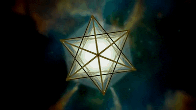

Alquimia:
En la historia de la ciencia, la alquimia (del árabe الخيمياء [al-khīmiyā])
es una antigua práctica protocientífica y una disciplina filosófica que
combina elementos de la química, la metalurgia, la física, la medicina,
la astrología, la semiótica, el misticismo, el espiritualismo y el arte.
La alquimia fue practicada en Mesopotamia, el Antiguo Egipto, Persia,
la India y China, en la Antigua Grecia y el Imperio romano, en el Imperio
islámico y después en Europa hasta el siglo xviii, en una
compleja red de escuelas y sistemas filosóficos que abarca al menos 2500 años.